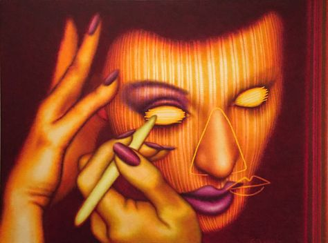

Ed Paschke

His work echos principles of abstraction and expressionism
and typically features pop culture imagery. I like that he
uses bold, electric colors and whimsical imagery, but his
work still remains rooted in real-world themes like consumerism
and the impacts of media culture
Gunnar Larsen
He is a fashion photography and director of a fashion
magazine from the 70s-80s. His magazine was primarily
image based and composed of his bold, sometimes
provacative photography. I recieved one of his magazines
as a gift and it inspired me to consider going into
publication design
Bea Feitler
She was a pioneering female art director for Harper's Bazaar
magazine. Her work is energetic and experimented a lot with
color and mix media, which is something I like to do with my
Her spreads are each unique, but somehow still remain
cohesive and harmonious throughout the magazines